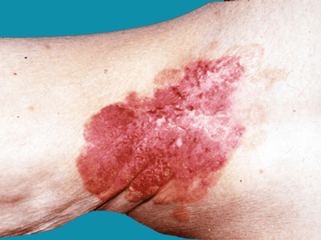

Extra-mammary Paget’s disease (EMPD) is a rare, slow-growing disease that is usually due to a pre-invasive type of
skin cancer. Usually it is confined to the skin, but in approximately 20% of the cases it can be associated with an
invasive cancer more deeply. It typically looks similar to a patch of eczema. It usually affects skin in the genital
area and around the anus of both males and females.
It is commonest in people aged between 50-60 years. It can be primary,
when its origin is in the skin, or secondary, when it comes from other adjacent regions internally like urethra, cervix,
bladder or bowel. Paget’s disease, in contrast, refers to the same type of changes affecting the breast or nipple.
There is no relation to another disease called Paget’s disease of the bone.
